Les chiffres trimestriels comprennent les principaux indicateurs relatifs à la liste d’attente et à l’activité de don et de transplantation d’organes en Suisse. Toutes les données proviennent du Swiss Organ Allocation System (SOAS), géré par l’OFSP .
Cette page est encore en cours de développement.
1. Liste d’attente
1.1 Personnes sur liste d’attente
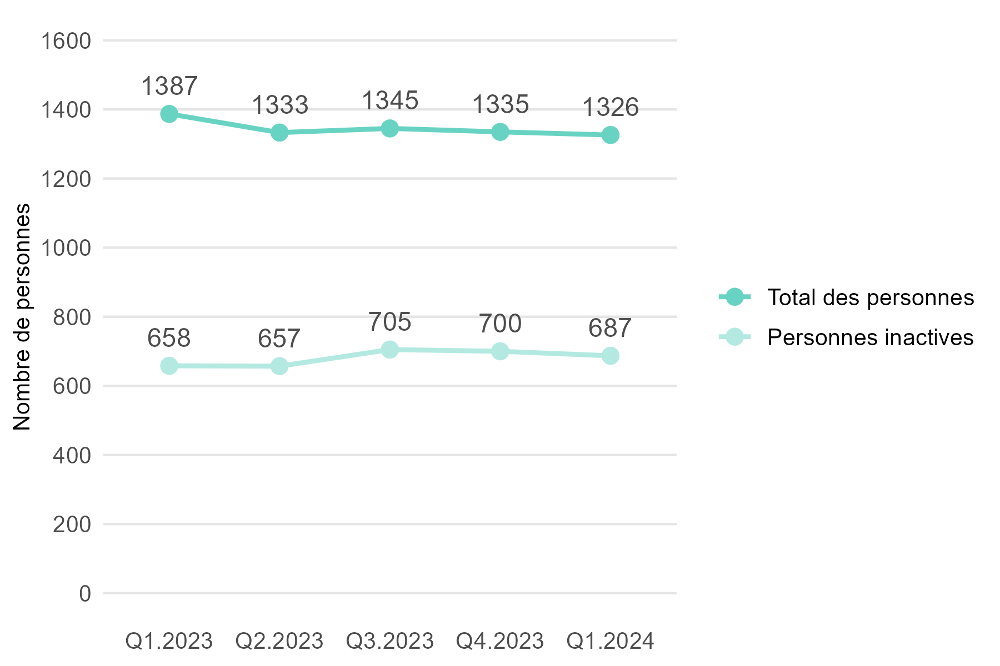
| Indicateur | Changement par rapport au trimestre précédent |
|---|---|
| Nombre de patients en liste d’attente | -9 patients (-0.7 %) |
Fin mars 2024, 1326 personnes attendaient en Suisse un ou plusieurs organes de donneurs décédés. Par rapport au trimestre précédent, cela représente 9 personnes de moins (-0,7 %). Près de la moitié (48,8 %) des personnes sur la liste d’attente avaient un statut inactif.
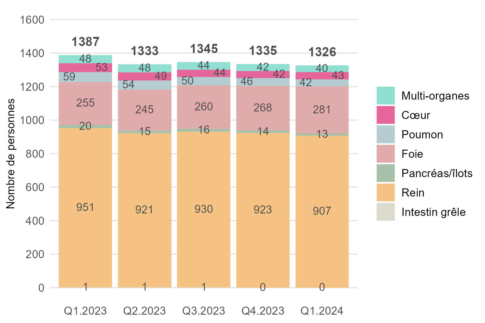
| Indicateur | Changement par rapport au trimestre précédent |
|---|---|
| Multi-Organ | -2 patients (-4.8 %) |
| Cœur | +1 patient (+2.4 %) |
| Poumons | -4 patients (-8.7 %) |
| Fois | +13 patients (+4.9 %) |
| Rein | -16 patients (-1.7 %) |
| Pancréas/îlots de Langerhans | -1 patient (-7.1 %) |
Sur les 1326 patients en liste d’attente, la grande majorité attendait un rein (907 ; 68 %) ou un foie (281 ; 21 %). 40 patients attendaient plus d’un organe.
1.3 Événements sur la liste d’attente
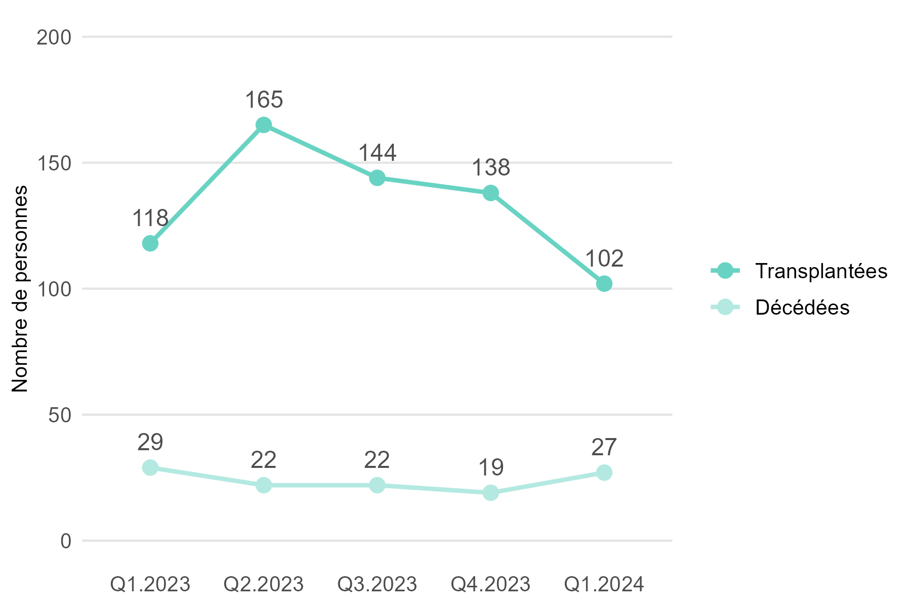
| Indicateur | Changement par rapport au trimestre précédent |
|---|---|
| Nombre de patients transplantés | -36 Personen (-26.1 %) |
| Nombre de patients décédés | +8 Personen (+42.1 %) |
Au premier trimestre 2024, 140 personnes ont reçu en Suisse un ou plusieurs organes provenant d’un don d’organe apres la mort. 28 personnes sont décédées sur la liste d’attente au premier trimestre 2024.
2. Don d’organes
2.1 Personnes autorisées à faire un don après la mort
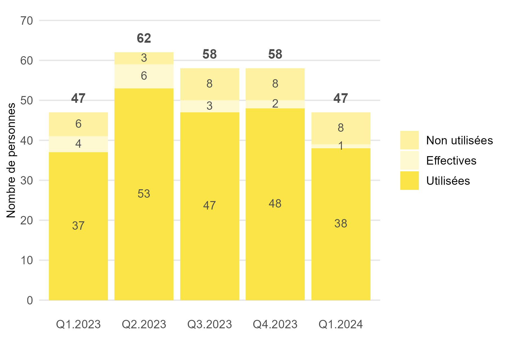
| Indicateur | Changement par rapport au trimestre précédent |
|---|---|
| Nombre de personnes autorisées | -11 personnes (-19.0 %) |
| Proportion non utilisée (17.0 %) | +4.2 Prozentpunkte |
| Proportion effectif (2.1 %) | -6.4 Prozentpunkte |
| Proportion utilisée (80.9 %) | +2.2 Prozentpunkte |
Au premier trimestre 2024, Swisstransplant a autorisées 47 personnes de Suisse pour un don d’organe après la mort. Ce sont 11 de moins qu’au trimestre précédent. Le taux d’utilisation était de 80,9%.
2.2 Donneurs décédés

| Indicateur | Changement par rapport au trimestre précédent |
|---|---|
| Nombre de donneurs (tous) | -11 (-22.0 %) |
| DBD | -4 (+15.4 %) |
| DCD | -7 (-29.2 %) |
Au premier trimestre 2024, 39 personnes ont fait don de leurs organes après leur décès en Suisse. Par rapport au trimestre précédent, cela représente 11 personnes de moins (-22,0 %).
2.3 Organes transplantés de donneurs décédés
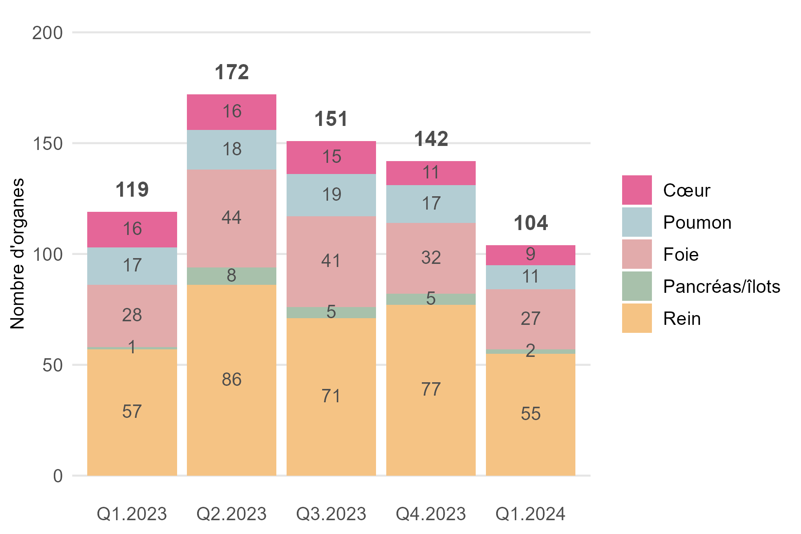
| Indicateur | Changement par rapport au trimestre précédent |
|---|---|
| Organes transplantés (tous) | -16 (-13.6 %) |
| Cœur | +1 patient (+2.4 %) |
| Poumons | -4 patients (-8.7 %) |
| Fois | +13 patients (+4.9 %) |
| Rein | -16 patients (-1.7 %) |
| Pancréas/îlots de Langerhans | -1 patient (-7.1 %) |
Au premier trimestre 2024, 104 organes ont été transplantés en Suisse de donneurs décédés. Par rapport au trimestre précédent, cela représente 38 (-26.7 %) organes de moins.
2.4 Organes transplantés par donneur décédé

| Indicateur | Changement par rapport au trimestre précédent |
|---|---|
| Organes par donneur (DBD et DCD) | -0.4 organes |
| DBD | -0.1 organes |
| DCD | -0.7 organes |
Im ersten Quartal 2024 wurden in der Schweiz durchschnittlich 2.4 Organe pro spendende verstorbene Person transplantiert. Im Vergleich zum Vorquartal sind das 0.3 Organe weniger. Insbesondere wurden weniger Organe pro spendende verstorbene Persone im Hirntod nach Herz-Kreislauf-Stillstand transplantiert.
2.5 Donneurs vivants
| Indicateur | Dernier trimestre | Changement par rapport au trimestre précédent |
|---|---|---|
| Nombre de donneurs vivants (tous) | 38 | +2 Personnes |
| Fois | 1 | +/-0 Personnes |
| Rein | 37 | +2 Personnes |
Au premier trimestre 2024, 38 personnes vivantes en Suisse ont donné un de leurs reins et 1 personne a donné une partie de son foie. Cela représente 2 dons de reins entre vifs de plus qu’au dernier trimestre 2023.
3. Transplantations
3.1 Personnes transplantées en Suisse
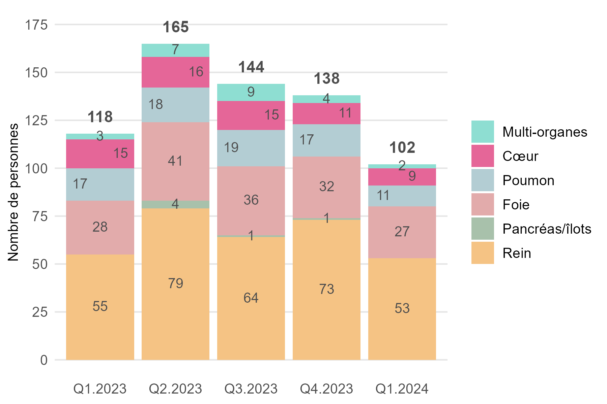
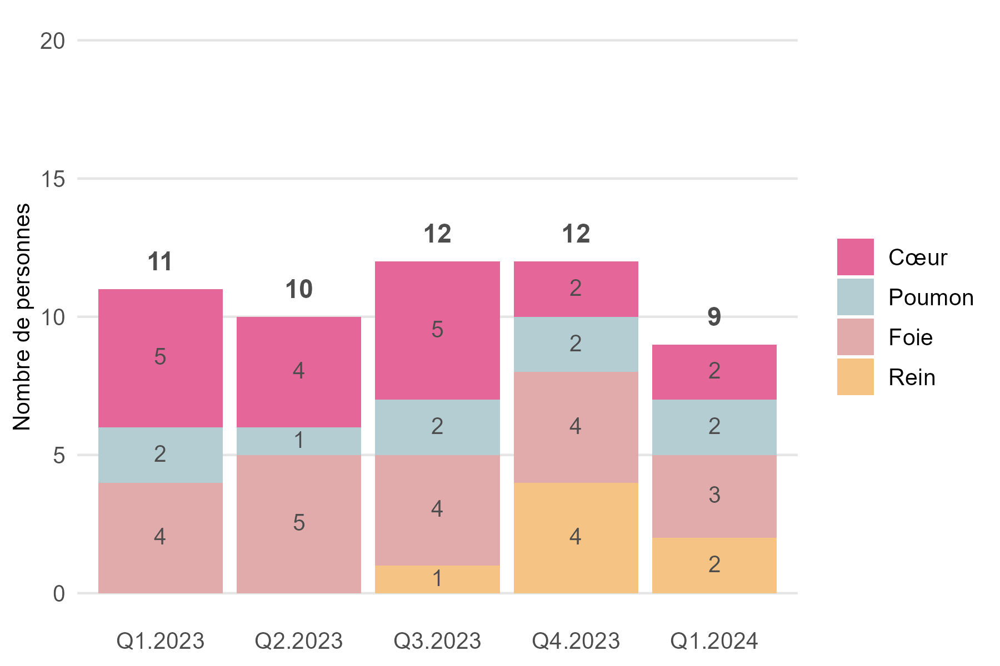
3.3 Personnes transplantées à l’étranger
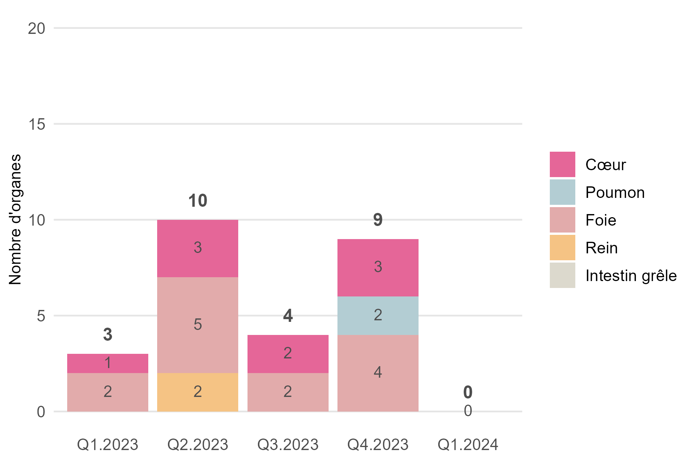
3.4 Transplantation de cœur
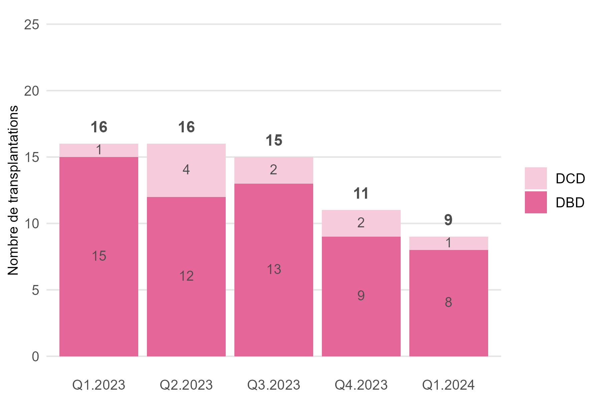
3.5 Transplantation de poumons
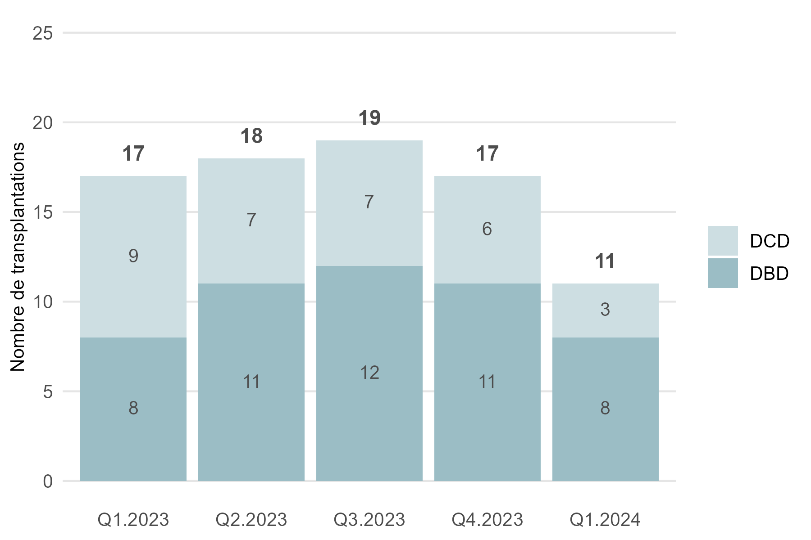
3.6 Transplantation de foie
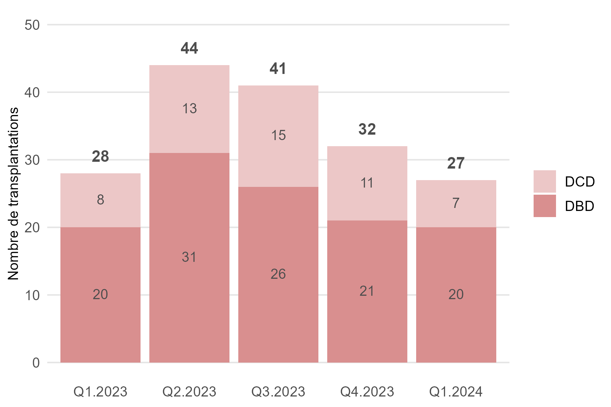
3.7 Transplantation de reins
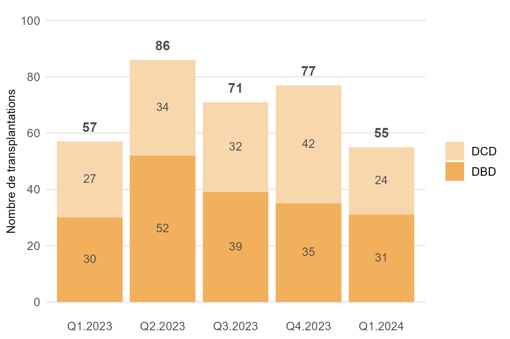